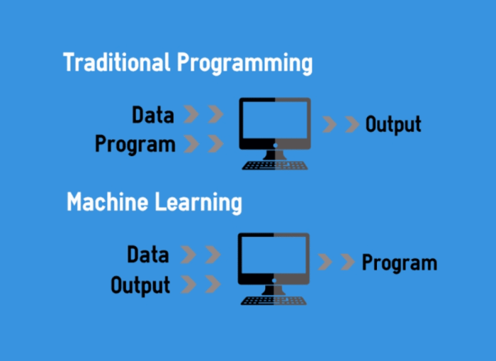

MACHINE LEARNING
(OVERVIEW)
The history of Machine learning
In 1950 Alan Turing published an article answering the question, “Can machines think?”
In 1957, Frank Rosenblatt designed the first neural network for computers, now commonly called the Perceptron model.
In 1959, Bernard Widrow and Marcian Hoff created two network models called Adeline, that could detect binary patterns and Madeline, that could eliminate echo on phone lines.
Gerald Dejong in 1981 introduced the concept of explanation-based learning, in which a computer analyzes data and creates a general rule to discard unimportant information.
During 1990s machine learning shifted from a knowledge-driven approach to a more data-driven approach.
During 1990s machine learning shifted from a knowledge-driven approach to a more data-driven approach.
In 2002 IBM’s Watson beat two human champions in a game of Jeopardy
During 1990s machine learning shifted from a knowledge-driven approach to a more data-driven approach.
In 2002 IBM’s Watson beat two human champions in a game of Jeopardy
In the 2016, Google’s AlphaGo program became the first computer program to beat a professional human using a combination of ML and tree search techniques


Common uses of machine learning
- Computational finance, for credit scoring and algorithmic trading
- Image processing and computer vision, for face recognition, motion detection, and object detection
- Computational biology, for tumor detection, drug discovery, and DNA sequencing
- Energy production, for price and load forecasting
- Automotive, aerospace, and manufacturing, for predictive maintenance
- Natural language processing, for voice recognition applications
What is machine learning?
ML is the ability of all machines to learn without being explicitly programmed.
Machine learnig techniques


Classification
Classification
Common classification alogrithms:
- k-nearest neighbor
- Naïve Bayes
- discriminant analysis
- logistic regression
- support vector machine (SVM)
- boosted and bagged decision trees
- neural networks
Regression
Regression
Common regression alogrithms:
- linear model
- nonlinear model
- regularization
- stepwise regression
- boosted and bagged decision trees
- adaptive neuro-fuzzy learning

Clustering
Clustering
Common clustering alogrithms:
- k-means and k-medoids
- hierarchical clustering
- Gaussian mixture models
- hidden Markov models
- self-organizing maps
- fuzzy c-means clustering
- subtractive clustering

Reinforcement learinig alogrithms:
- Value-based
- Policy-based
- Model-based
Learning Models of Reinforcement:
- Markov Decision Process
- Q learning
ML frameworks and libraries
- Developed by Google
- Perform regression, classification, neural networks, etc.
- Run on both CPUs and GPUs
- Simple enough for the basic user

- Developed by Facebook AI Research
- Leading competitor to TensorFlow
- Perform regression, classification, neural networks, etc.
- Run on both CPUs and GPUs
- Considered to be more customizable
- Good to run quick ML model sketches
- Leading competitor to TensorFlow
- Provides model analysis tools like the confusion matrix
- Has excellent data pre-processing tools for one-hot encoding categorical data
- Can run in clusters
- Works with Spark SQL dataframes
- Provides model analysis tools like the confusion matrix